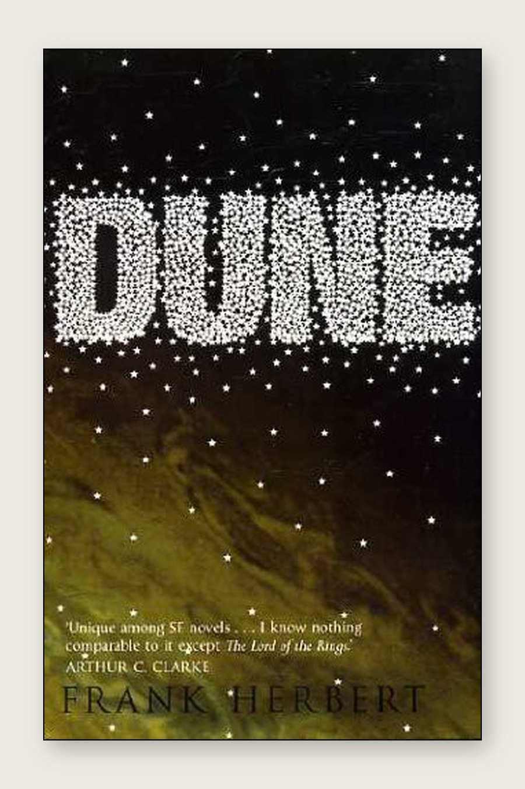
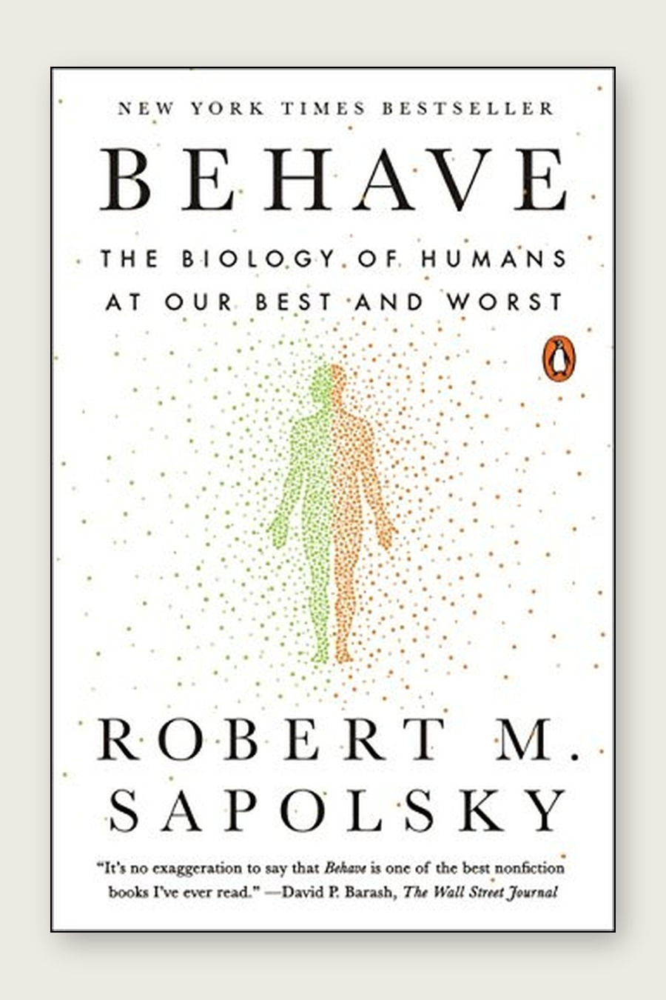
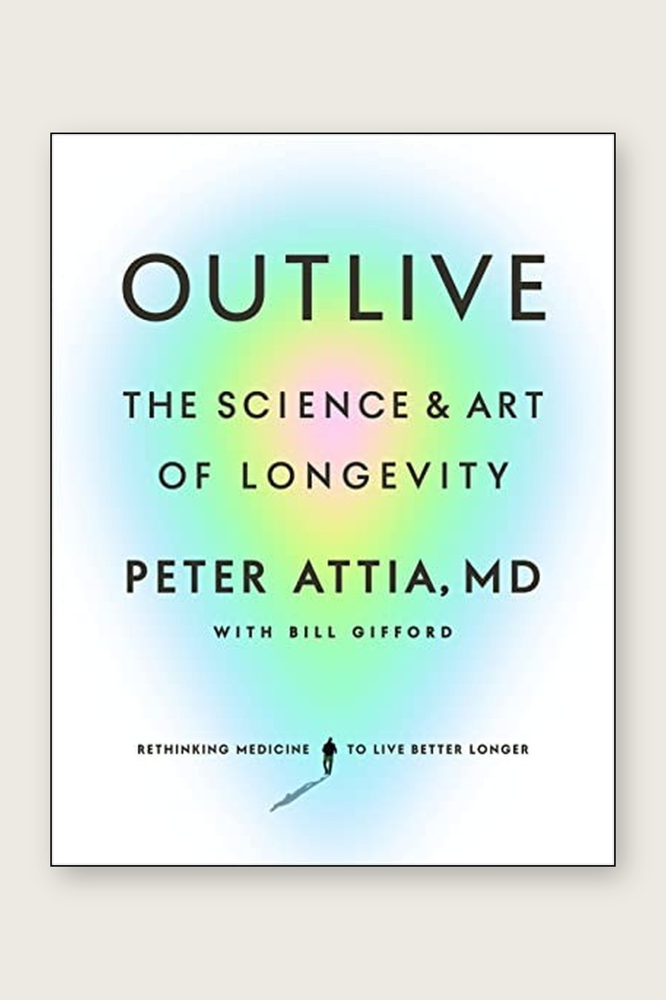
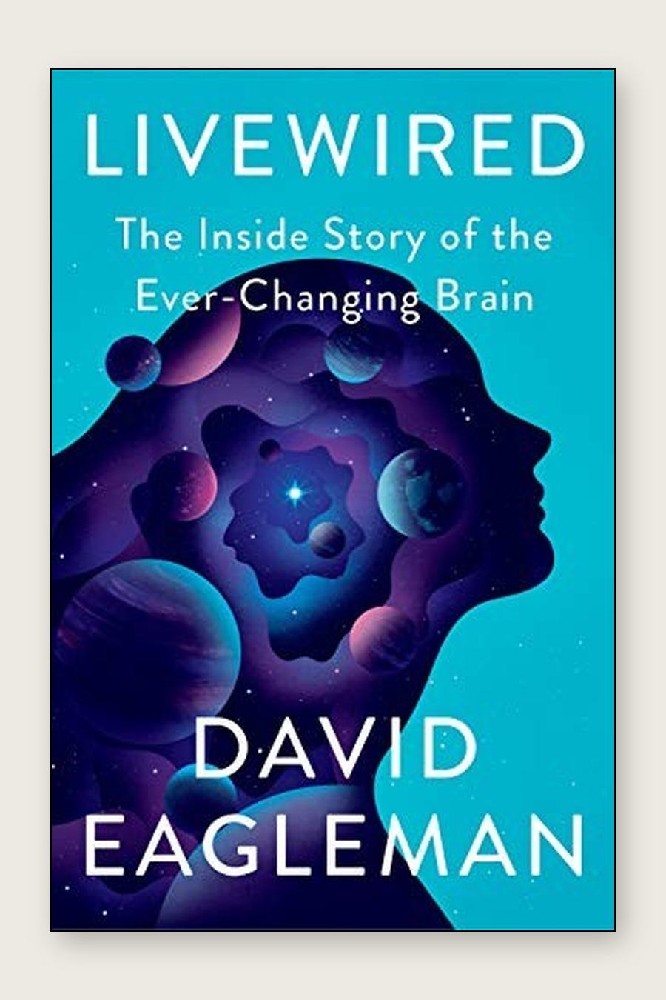
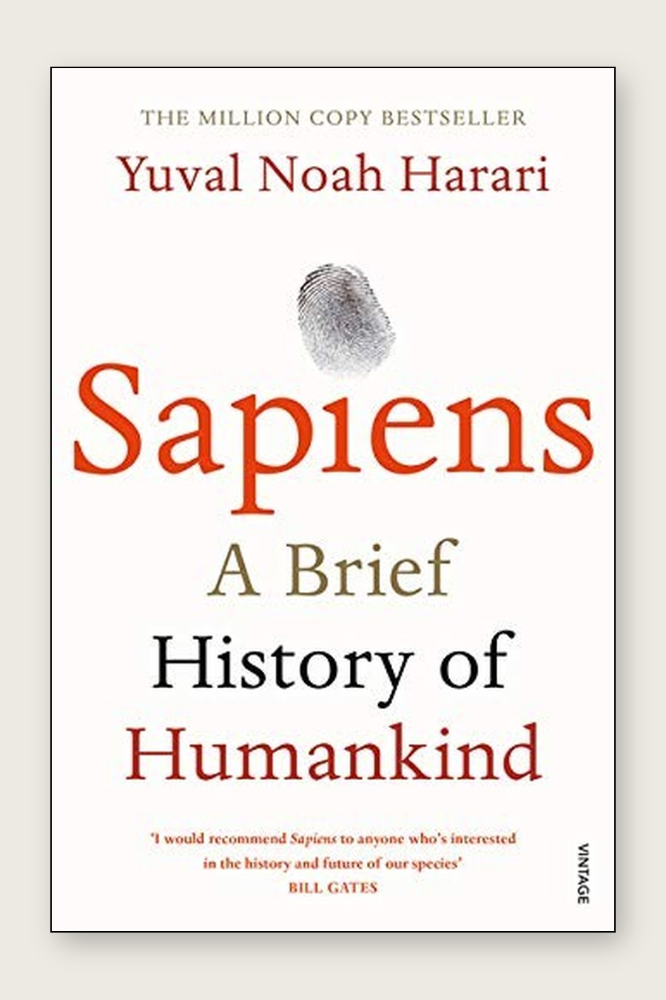
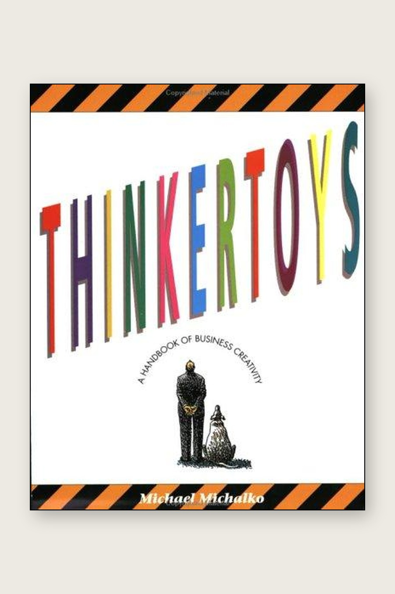
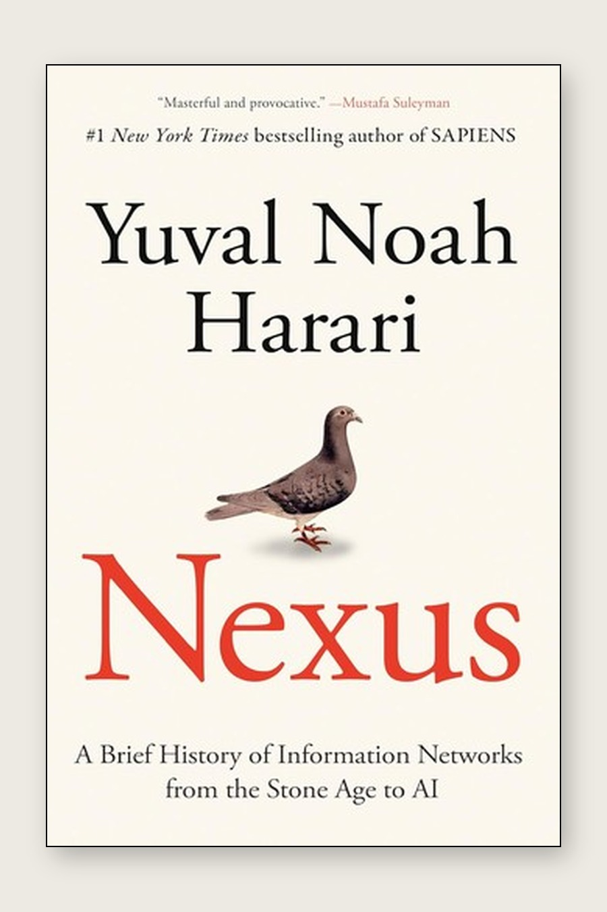
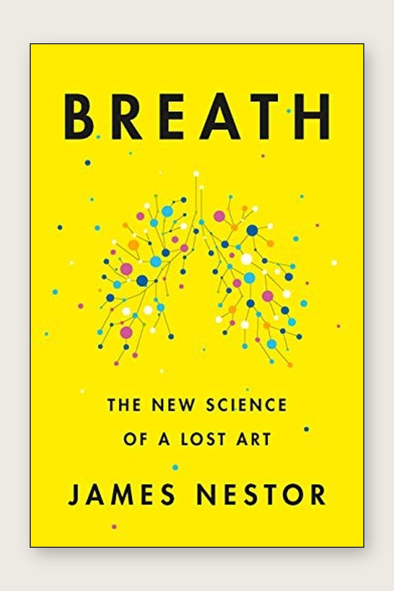

Books
Books
[A short intro line about what's on this shelf — to fill in.]

Shoe Dog
Knight almost went bankrupt like every other month for a decade before Nike became Nike. That's the whole book, honestly. Not some visionary master plan, just a guy refusing to quit through one cash crisis after another. Made "overnight success" sound like a joke.

Dune
Everyone treats Paul Atreides like the hero, but Herbert's actually writing him as a cautionary tale. Messiahs are dangerous, not cool. Took me a while to notice that on a first read. The politics through ecology stuff, water, spice, control, has aged weirdly well too.

The Unseen Body
A doctor writing about anatomy through the weirdest places he's worked: Antarctica, rural India, a morgue. Way better than any bio textbook because every organ comes attached to an actual gross or strange story instead of a diagram.

The Body
Classic Bryson grab bag of "wait, seriously?" facts about your own body. Not much of an argument holding it together, just constant reminders of how much stuff your body is doing right now that you have zero awareness of.

Behave
Long book. Sapolsky's trick is explaining a single human action by zooming out: what happened a second ago, then a minute, then your childhood, then a million years of evolution. Slow going in parts, but it permanently changed how I think about why people do what they do.

Outlive
Basically: stop waiting for disease to show up and start acting now like it's already coming. The exercise as medicine argument hit harder than the nutrition stuff. He makes a good case it beats most drugs on the market.

The Seven Measures of the World
Didn't expect a book about the kilogram and the second to be this fun. It's really a history of how humans agreed on anything at all. Standardizing a unit of measurement turns out to be a centuries long political fight.

Livewired
Eagleman's whole point is that "hardwired" is the wrong word for how brains work. They're constantly rewiring around whatever input they get. The sensory substitution stuff, feeling sound, seeing through your tongue, sounds made up but isn't.

A Brief History of Intelligence
Traces intelligence back through five evolutionary jumps and lines each one up against where AI currently is. Finally got a real answer for why a computer can beat a grandmaster at chess but can't fold laundry. Evolution built those skills in basically reverse order from how we built AI.

Same As Ever
Short essays, mostly about money and risk, all making the same underlying point: people don't really change, situations just get repackaged. More of a keep it on the shelf and reread a chapter book than a cover to cover one.

Sapiens
The one about how humans run on collective made up stories: money, nations, religion, corporations, none of which exist outside of us all agreeing to believe them. Sounds obvious once you hear it, but it rewires how real a lot of institutions feel.

Why We Sleep
Convinced me sleep deprivation is a real crisis, not just something tired people complain about. Some of his numbers got picked apart by other researchers after this came out, so I'd take the specific stats with a grain of salt, but the core message stuck.

Thinkertoys
Less a book you read and more a toolbox you raid. A pile of creativity techniques lifted from ad agencies and inventors. Genuinely useful when you're stuck on a problem and want a structured way to force new angles.

The Molecule of More
Dopamine isn't the feeling good chemical, it's the wanting more chemical, and it doesn't care once you've actually got the thing. Explains why hitting a goal feels weirdly empty about five minutes later.

Nexus
Sapiens but about information networks: myths, scripture, printing press, algorithms. The idea that more connectivity and more information were never automatically going to make us wiser is the part I keep coming back to.

The Nvidia Way
Built off a ton of interviews with Jensen Huang and early Nvidia people. The parts about the company nearly dying multiple times in the '90s are so much more interesting than the recent richest company in the world chapters everyone already knows.

The Ickabog
Lighter, kid aimed fairy tale, but don't let that fool you. It's really about two corrupt officials inventing a monster to seize power and terrify a population into obedience. Sharper political commentary than it looks on the cover.
.jpg)
Elon Musk
Written with Musk's cooperation, so it's the friendlier of the two Musk biographies. Focuses on how insane the early SpaceX and Tesla bets actually were rather than digging into Musk himself. That's what the Isaacson book does instead.

The Idea Factory
History of Bell Labs, the place that basically invented the transistor, the laser, and modern information theory, seemingly by accident of putting brilliant people in one building with no deadline. Nothing like it really exists anymore, which is kind of a bummer.

Undercover Economist
Makes ordinary stuff, coffee prices, used car scams, actually interesting by showing the economics hiding underneath. Good one for seeing market forces in things you normally just walk past.

Surely You're Joking, Mr. Feynman
Feynman being Feynman: cracking safes, playing bongos, messing with people, doing physics almost as an afterthought in some chapters. What I actually took from it: he never cared if a question sounded serious before chasing it.

Six Easy Pieces
Pulled from his full Lectures on Physics, the more digestible chunks. Good gut check for whether you actually understand something. If you can't explain it this simply, you don't, yet.

This Is Going to Hurt
Genuinely one of the funniest books I've read, until it just isn't anymore. That whiplash is deliberate. Underneath the jokes it's a pretty bleak account of how burned out doctors in the NHS actually are.

Atomic Habits
Yes, everyone's already read this. The one idea that actually stuck with me: build systems and identity, not goals. Goals end when you hit them, systems just keep running.

How Economics Explains the World
Fast lap through history, agriculture to AI, filtered through economics. Didn't teach me much new, but it's a good compressed refresher if you already know the general shape of history and want the economic through line.
.jpg)
Elon Musk
The messier, more recent Musk biography, deep into the Twitter/X takeover and the "demon mode" stuff. Less flattering than Vance's version and more willing to sit with the question of whether the same intensity that built SpaceX is now the thing blowing things up.

Breath
Turns out most people breathe wrong, mouth instead of nose, too fast, too shallow, and fixing it does more than it has any right to. One of the few books that actually changed a daily habit of mine instead of just being interesting to read.

How We Got to Now
Traces six inventions, glass, cold, sound, clean, time, light, through chains of consequence nobody could've predicted. The "hummingbird effect" idea, one invention causing totally unrelated changes somewhere else entirely, is the one part of this I still think about.

A Short History of Nearly Everything
Science history told through the odd, petty, lucky people who actually made the discoveries, not just the discoveries themselves. Bryson's whole move is that the story of how we found something out is usually funnier and messier than the finding.

On the Origin of Time
Hertog was working with Hawking on this right up until Hawking died. The idea is that even the laws of physics themselves evolved rather than being fixed from the start. Dense, slow, had to reread some pages twice, but it's a genuinely huge idea if it's right.

The End Is Always Near
Carlin walking through history's near collapses, plagues, nuclear close calls, empires falling apart, and asking how close we actually came each time. Made "we live in uniquely unstable times" sound a lot less unique.
- Mastery
- A Brief History of Time
- The Last Gambit
- An Economic History of the World Since 1400
- Wings of Fire
- The Founders
- Total Competition